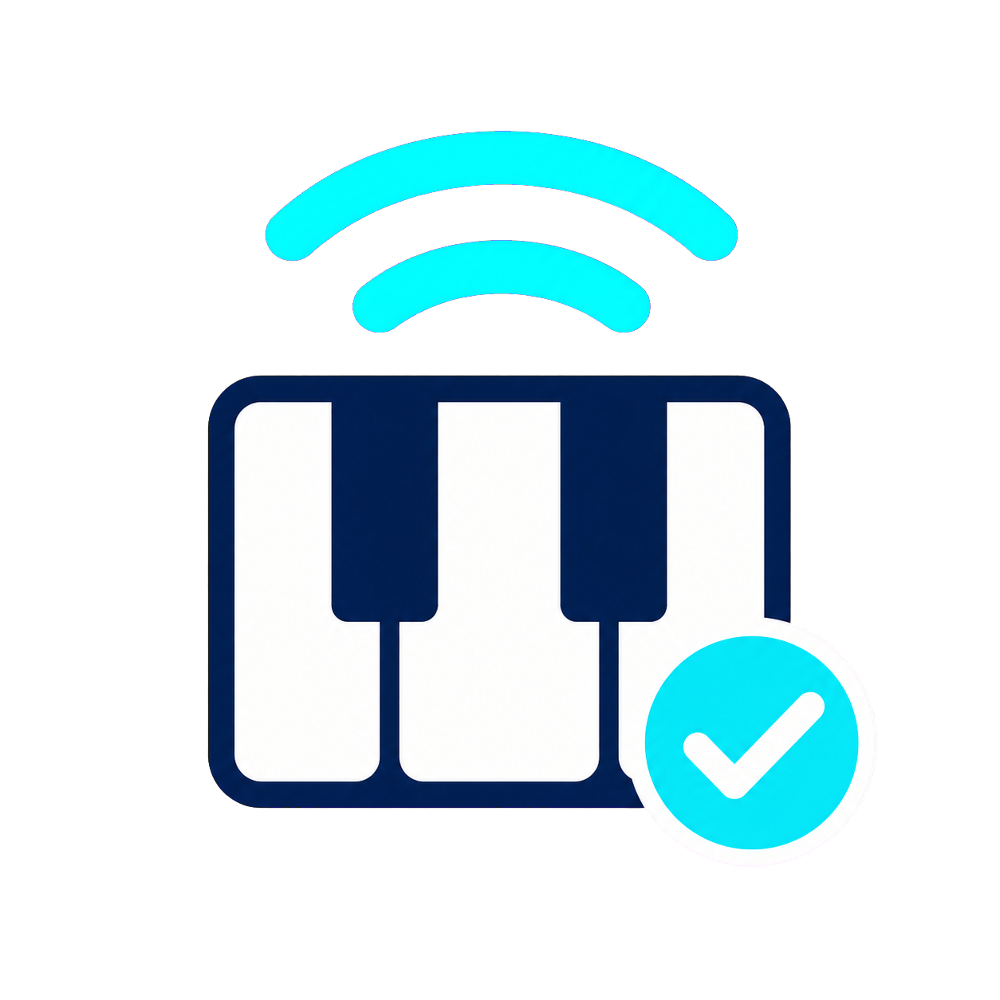

Safe Audio
Connects the preserved Windows playback endpoint without opening Settings, changing the default output, or playing a test tone.

WU-BT10 Windows FixSupported Casio instruments · WU-BT10 · Windows 11
Restore the missing Casio Bluetooth capabilities on Windows and move cleanly between speaker playback and bidirectional BLE-MIDI.
Connect the preserved playback endpoint and verify the 20% safety limit.
Create the temporary Windows MIDI port and open the live BLE-MIDI service.
Designed around the hardware
The app checks the current state, releases the active mode correctly, and verifies the new connection before reporting success.
Connects the preserved Windows playback endpoint without opening Settings, changing the default output, or playing a test tone.
Bridges bidirectional BLE-MIDI through a temporary Windows MIDI Services port with automatic link-loss recovery.
Switching modes releases the previous Bluetooth profile and verifies that WU-BT10 is available before continuing.
Before you connect
The current release candidate is hardware-tested on x64.
Install the runtime and restart Windows before using MIDI.
Audio pairing is confirmed once by Windows; later switching is handled by the app.
Supported Casio models
WU-BT10 Audio and MIDI switching is supported for the following Casio models:
Release status
Version 2.1 is a hardware-verified release candidate. The source, audits, and test protocol are public; a production download will be published only after signing and clean multi-PC validation.
Optional support
The application remains fully available to everyone. Support helps cover additional Windows and hardware testing.